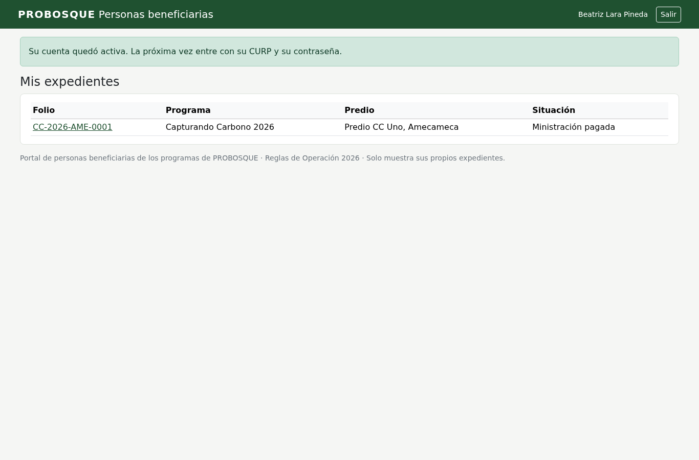
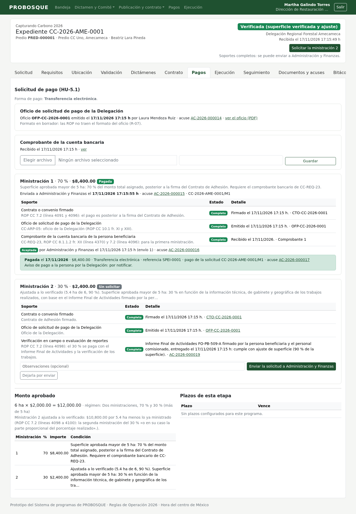
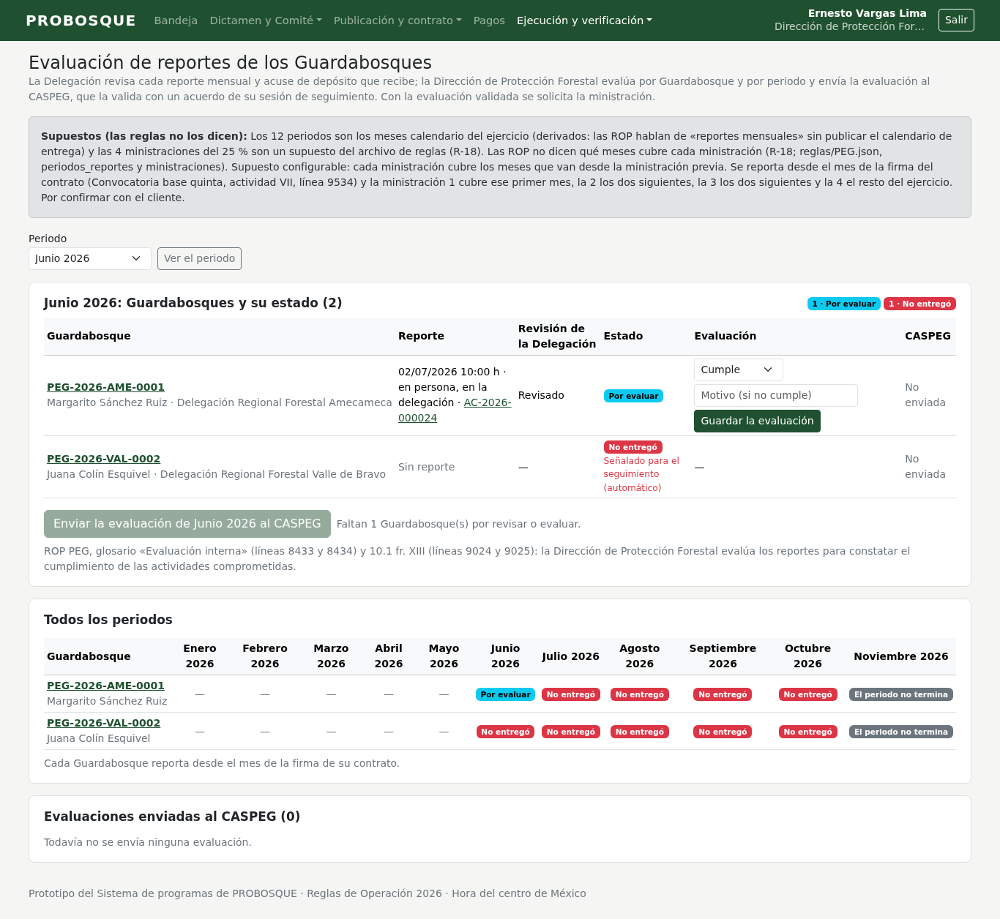
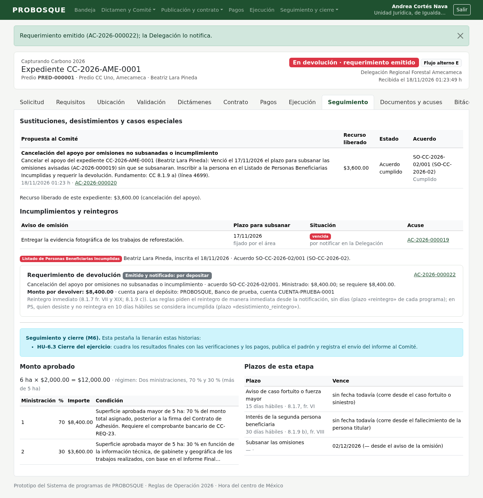
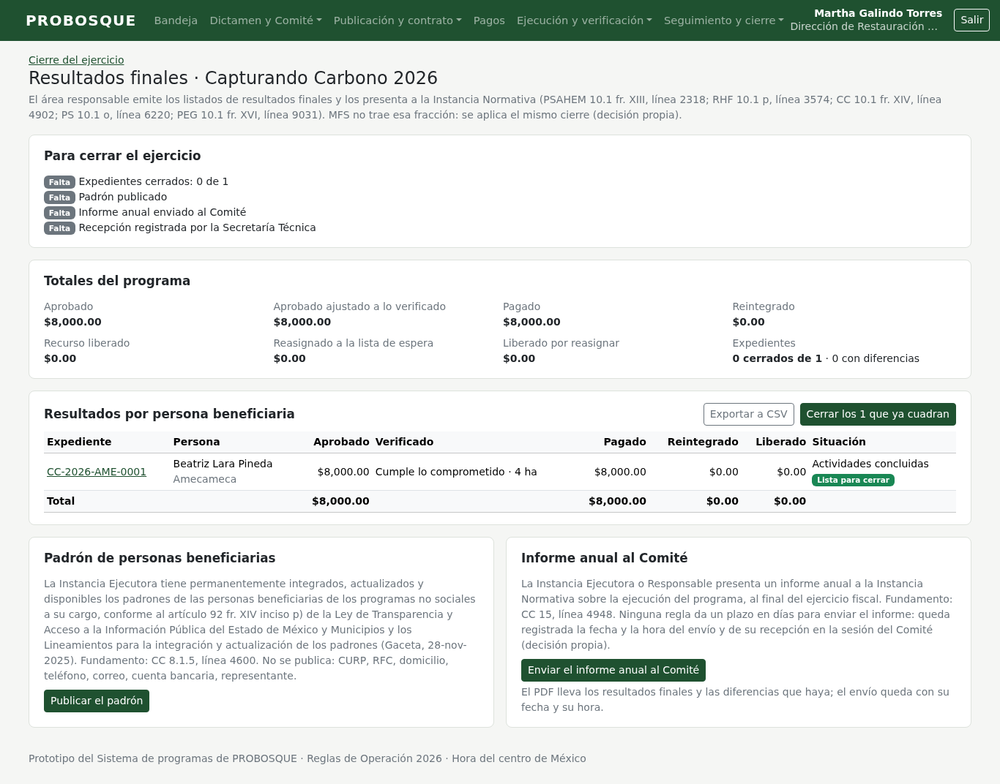
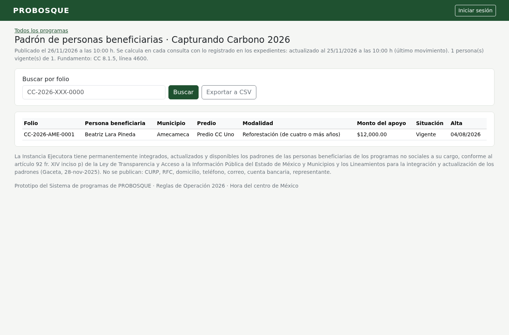
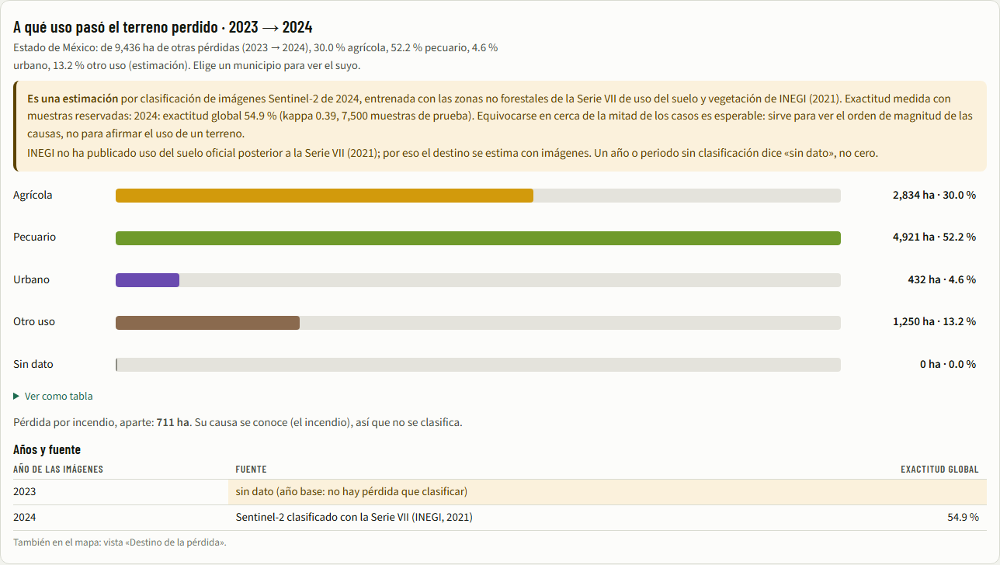
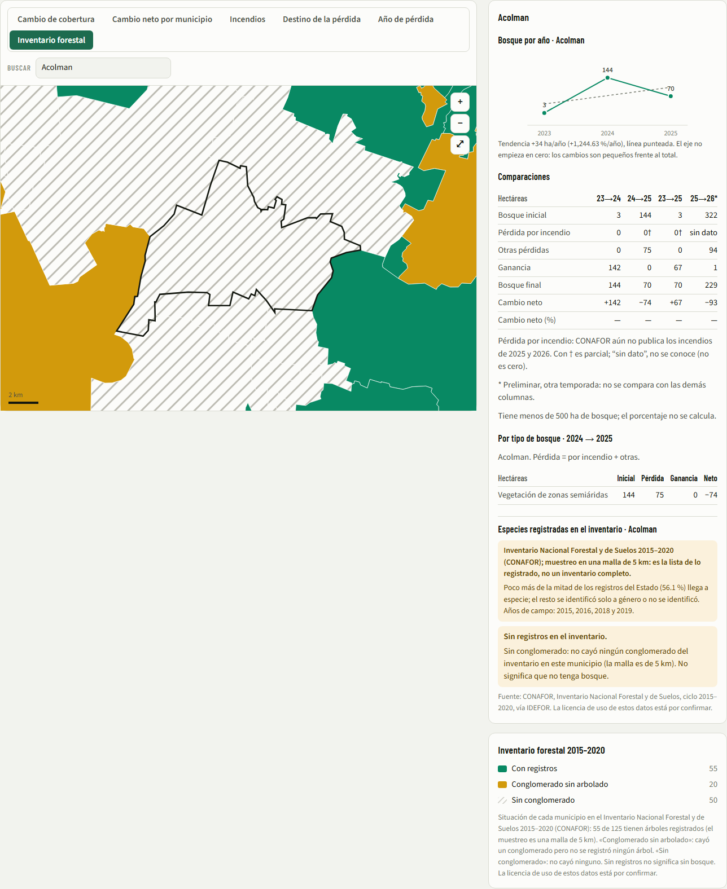

PROBOSQUE · Programas 2026 · Prototipos
Qué se agregó al sistema en el tercer y último prototipo, cómo quedaron cubiertas sus necesidades, qué se encontró en las Reglas de Operación, y el estado final del proyecto.
| Prototipo | Ejecución y verificación (M4), seguimiento y cierre (M6), portal de personas beneficiarias; uso del suelo y especies (M7.4 y M7.5) |
| Construcción | 16 al 18 de noviembre de 2026 |
| Historias | 8 de 26 (39 de 112 puntos); con los sprints 1 y 2, las 26 |
| Repositorio | github.com/Zavjosh05/FEPI, rama prototipos |
| Autor | Joshua Zavaleta |
| Antecedentes | Resúmenes de los sprints 1 y 2 (entregas/sprint_1/ y entregas/sprint_2/) |
Al cerrar el sprint 2 el trámite llegaba hasta la primera ministración en cuatro programas (Capturando Carbono, PS, RHF y PSAHEM). MFS y Guardabosques tenían funciones construidas pero no reglas, y la segunda ministración estaba bloqueada porque no existía la verificación en campo.
Este sprint atiende la parte del trámite que sucede después del pago y que hoy se lleva casi toda en papel:
La arquitectura es la de los sprints anteriores (Django con GeoDjango, PostgreSQL con PostGIS, HTMX, Docker Compose). Lo nuevo:
| Pieza | Qué es | Por qué |
|---|---|---|
| Reglas de los seis programas | Se extrajeron las de MFS y Guardabosques con su numeral y su línea, igual que las de los otros cuatro. Los montos se calculan por hectárea, por apoyo o por persona según el programa, y la persona beneficiaria puede ser distinta de quien solicita (el Guardabosque frente al núcleo agrario). | Con ellas los seis programas recorren el mismo trámite con sus diferencias como datos, no como código aparte. |
| Portal de personas beneficiarias | App portal: cuenta creada al firmar el contrato (usuario CURP y un código de un solo uso impreso en el acuse); como respaldo, consulta con folio y código. Cada cuenta ve solo sus expedientes. | Decisión de Joshua del 15 de noviembre. La consulta sin cuenta no identifica a la persona, por eso solo consulta y no envía. |
| Estados de ejecución y seguimiento | Quince estados y un centenar de transiciones nuevas en la tabla del trámite, con los flujos alternos de caso fortuito, prórroga, sustitución, suspensión, cancelación y devolución. | El trámite sigue teniendo una sola tabla de estados que dice qué unidad puede hacer cada paso. |
| Panel «Por vencer» | Cada bandeja muestra los plazos de ejecución y seguimiento que vencen pronto: avisos, informes, reportes, plazos para subsanar. | Solo avisa; ninguna sanción se aplica sola (la confirma una persona, como se decidió en el sprint 2). |
Módulos ejecucion y seguimiento | Las dos apps ya traían sus tablas desde el sprint 1; en este sprint recibieron su código y sus pruebas por historia. | Cada historia se construyó, probó y registró por separado. |
La base de datos no cambió de tamaño: sus 78 tablas están programadas desde el sprint 1. Las historias de este sprint empiezan a usar las 19 de la columna «Desde el sprint 3» del mapa de abajo. El diagrama entidad-relación, generado desde el código, tiene ahora ocho
áreas (sistema/docs/modelo_datos.md).
La base está completa y programada desde el sprint 1; en este sprint no se crearon tablas. Las 19 de la columna «Desde el sprint 3» son las que empiezan a usar las pantallas y servicios de este sprint; las anteriores solo recibieron las columnas que ya traía el diseño. El detalle (arquitectura, decisiones de diseño, diagrama entidad-relación de cada área, diccionario de datos de las 78 tablas e historial) está en el documento aparte entregas/diseno/Diseno_capa_de_persistencia.pdf.
Cada cuadro es una tabla (el nombre del modelo de Django; la tabla en PostgreSQL es <app>_<modelo>). Las {len(datos['tablas'])} están programadas desde el sprint 1; el color dice desde qué sprint las usan las pantallas y servicios: sprint 1 sprint 2 sprint 3
| Área | Se usan desde el sprint 1 (36 tablas) | Desde el sprint 2 (23) | Desde el sprint 3 (19) |
|---|---|---|---|
| 1. Reglas por programa y catálogos Núcleo: base de todas las historias | Consecutivo DiaInhabil Ejercicio Estado Formato Ministracion Modalidad MontoApoyo Municipio Plazo Programa Requisito TipoPersona Transicion Unidad Usuario | — | — |
| 2. Expediente y recepción M1 · HU-1.1 a HU-1.4 | Acuse Documento Evento Expediente Persona Predio ObservacionValidacion Poligono RevisionRequisito Validacion | Hito Notificacion | — |
| 3. Dictamen y Comité M2 · HU-2.1 a HU-2.4 | Acuerdo DictamenJuridico DictamenTecnico DocumentoSesion MovimientoListado PersonaIncumplida PredioSancionado ResolucionSesion RevisionPropiedad SesionComite | — | — |
| 4. Publicación y contrato M3 · HU-3.1 a HU-3.4 | — | Adendum Contrato ElementoFormalizacion Especie FirmaContrato ModeloContrato Publicacion RenglonVale ResultadoPublicado SalidaPlanta SinFirma ValePlanta VersionModelo Vivero | — |
| 5. Pagos M5 · HU-5.1 a HU-5.3 | — | Cheque ComprobanteCuenta OficioPago Pago RemisionFiduciaria RevisionSolicitud SolicitudPago | — |
| 6. Portal de personas beneficiarias Apoyo a M4 y M6 | — | — | AccesoExpediente CodigoConsulta CuentaExterna |
| 7. Ejecución y verificación M4 · HU-4.1 a HU-4.3 | — | — | Comprobacion EnvioEvaluacion EvaluacionPeriodo Incidencia RevisionReporte Verificacion |
| 8. Seguimiento y cierre M6 · HU-6.1 a HU-6.3 | — | — | AvisoOmision CierreExpediente CuentaReintegro InformeAnual PadronPublicacion Propuesta Prorroga Requerimiento Senalamiento SolicitudPersona |
Se construyeron completos los módulos M4 Ejecución y verificación y M6 Seguimiento y cierre, el portal de personas beneficiarias y las funciones M7.4 y M7.5 de la Calculadora. Con la verificación quedó conectada la segunda ministración.
flowchart TB contratada([Contratada]) --> pagada1[Primera ministración pagada] pagada1 --> ejec[En ejecución] ejec -->|"Persona por el portal o Delegación"| comp[Comprobación enviada] comp -->|Delegación| verif[Verificada] verif -->|"Adm. y Finanzas: segunda ministración"| concl[Concluida] concl -->|Dirección| cerrado([Ejercicio cerrado]) ejec -.->|aviso| caso[Caso fortuito] ejec -.->|"MFS, causa externa"| prorroga[Prórroga solicitada] ejec -.->|"fallecimiento"| sust[Sustitución] ejec -.->|"Dirección: aviso con plazo"| omis[Omisiones por subsanar] omis -.->|subsana| ejec ejec -.->|suspensión| susp[Suspendida] omis -.->|"no subsana: acuerdo del Comité"| canc[Cancelada] canc -.->|"Unidad Jurídica: requerimiento"| devol[En devolución] devol -.->|"Adm. y Finanzas: depósito"| reint[Reintegrada] reint -.->|Dirección| cerrado canc -.->|"recurso liberado al Comité"| espera[Lista de espera: reasignación en orden] classDef nuevo fill:#d8eedf,stroke:#2e7d4f,color:#123; classDef alterno fill:#fdebc8,stroke:#b7791f,color:#321; class ejec,comp,verif,concl,cerrado nuevo; class caso,prorroga,sust,omis,susp,canc,devol,reint,espera alterno;
Cada flecha dice qué unidad hace el paso. En Guardabosques el camino es otro: reportes mensuales, evaluación por periodo y validación del CASPEG antes de cada una de las cuatro ministraciones; esa evaluación no mueve el expediente de estado (decisión D-19 de la bitácora).
sequenceDiagram
autonumber
actor P as Persona beneficiaria
participant D as Delegación
participant A as Dirección (área responsable)
participant F as Adm. y Finanzas
D->>P: Firma: crea la cuenta del portal (código en el acuse)
P->>D: Envía aviso de término e informe final por el portal (acuse)
Note over P,D: o los entrega en ventanilla: mismo registro y mismo acuse
D->>D: Verifica en campo: superficie, sobrevivencia, incidencias (acuse)
alt Cumple
A->>F: Segunda ministración, proporcional a lo verificado (acuse)
F->>F: Registra el pago
else Incumple
D->>P: Aviso de omisión con plazo para subsanar
end
sequenceDiagram
autonumber
participant A as Dirección (área responsable)
participant C as Comité
participant J as Unidad Jurídica
participant D as Delegación
actor P as Persona beneficiaria
participant F as Adm. y Finanzas
participant T as Secretaría Técnica
opt Omisión no subsanada
A->>C: Propone la cancelación (recurso liberado)
C->>C: Acuerdo en sesión de seguimiento
J->>J: Inscribe en el Listado de Incumplidas
J->>D: Requerimiento de devolución (monto y cuenta)
D->>P: Notifica el requerimiento
F->>F: Comprueba el depósito
A->>C: Propone reasignar a la lista de espera, en su orden
end
A->>A: Resultados finales: coteja aprobado, verificado, pagado y reintegrado
A->>A: Cierra los expedientes que cuadran (acuse)
A->>A: Publica el padrón (página pública, sin cuenta)
A->>T: Envía el informe anual en PDF (fecha y hora)
T->>C: Registra la recepción en la sesión






Historia por historia: qué pide cada criterio de aceptación, cómo quedó resuelto y qué necesidades atiende. Los identificadores empiezan con la clave del programa y siguen con el rol: DRF Delegación, ARP área responsable (DPF en Guardabosques), UJ Unidad Jurídica, AF Administración y Finanzas, COM Comité, BEN persona beneficiaria, PSF prestador de servicios forestales, DEV equipo desarrollador.
«Atendida» significa que al menos una de las funciones que la cubren se construyó en este sprint; «completa», que ya no le falta ninguna función. El anexo A las lista una por una y el anexo B reúne las capturas de cada historia.
Como en los sprints anteriores, construir sobre el texto de las Reglas sacó a la luz huecos y diferencias. Todas están en la bitácora con su numeral y su línea; estas son las que cambiaron el diseño:
| Tema | Qué dicen las Reglas | Qué se hizo |
|---|---|---|
| Segunda ministración | En Capturando Carbono, PS y RHF se paga la parte proporcional a lo verificado; PSAHEM no lo dice y paga el 30 % completo. | Superficie verificada por monto por hectárea, menos lo ya pagado. En PSAHEM, el 30 % completo hasta que el cliente diga otra cosa. |
| Reportes de Guardabosques | Piden reportes mensuales y una evaluación antes de cada pago, pero no publican el calendario ni qué meses cubre cada una de las 4 ministraciones. | Reparto configurable desde el mes de la firma (1, 2, 2 y el resto), dicho en pantalla. |
| Omisiones | Prevén avisar y dar plazo para subsanar, pero no dicen cuántos días. | El área fija el plazo en cada aviso; el sistema lo vigila y avisa al vencer. |
| Reintegro | Es «inmediato» desde la notificación, sin días; la cuenta para el depósito la da Administración y Finanzas, y en PSAHEM no está claro. | Cuenta configurable por programa; el requerimiento queda abierto hasta comprobar el depósito. |
| Lista de espera | Se reasigna en orden de prelación, sin decir qué pasa si lo liberado no alcanza para la siguiente solicitud. | Se detiene en la primera que no alcanza; puede configurarse para saltarla. |
| Fallecimiento | La segunda persona beneficiaria tiene 30 días hábiles para manifestar interés; en Guardabosques no hay segunda persona y la defunción es baja. | Sustitución con su plazo; en Guardabosques, baja. |
| Padrón | Todos los programas lo mandan publicar (8.1.5), pero remiten las columnas a la Ley de Transparencia del Estado y a unos Lineamientos de noviembre de 2025 que no están en el texto; en Guardabosques parte de la información es clasificada. | Folio, persona, municipio, predio, modalidad, monto y situación; nunca CURP, RFC, domicilio ni cuenta. En Guardabosques se publica el núcleo agrario. |
| Cierre e informe anual | No hay plazo en días para publicar el padrón ni para cerrar; el informe anual va a la Instancia Normativa al final del ejercicio (en Guardabosques, en la primera sesión del siguiente). | Se registra la fecha y la hora del envío y de la recepción; donde no hay plazo, la pantalla lo dice. |


| Comprobación | Resultado al cierre del sprint |
|---|---|
| Pruebas automáticas del sistema | {{pruebas_sistema}} en verde, corridas también con todos los documentos PDF reales |
| Pruebas de la Calculadora | {{pruebas_calculadora}} en verde |
| Recorrido completo por servicios | Una solicitud por cada uno de los seis programas, de la solicitud al informe anual recibido: firma con cuenta del portal, planta donde aplica, ministraciones, comprobaciones, verificación, cierre y padrón. En Guardabosques, siete periodos de reportes, evaluación, CASPEG, cuatro ministraciones y cierre. Más un caso de incumplimiento hasta el reintegro y uno de reasignación hasta la firma |
| Recorrido completo por la interfaz | Con clics y cambio de usuario en cada relevo: Capturando Carbono de la firma al padrón público, incluida la persona en el portal y la consulta con folio y código; y Guardabosques en su ciclo de reportes |
| Revisión de los textos de la interfaz | Con todos los datos de demostración y cada usuario: ninguna pantalla habla de «sprint» ni de identificadores de historia |
| Tiempo de la batería | En paralelo: rápidas {{tiempo_rapidas}}; completa {{tiempo_completa}} |
| Capturas | {{capturas}} imágenes en entregas/sprint_3/capturas/ |
Los recorridos encontraron un error y tres detalles. El error: el acuse de un envío por el portal nombraba siempre a la persona beneficiaria aunque enviara el prestador de servicios; se corrigió. Los detalles: las once pestañas del expediente ya no cabían en una pantalla de portátil, la tabla de plazos no mostraba la fecha que el área fijó para subsanar y el padrón mezclaba la hora real con el reloj simulado de la demostración. Todo se corrigió dentro del sprint y está en la bitácora.
entregas/BITACORA.md registra cada propuesta,
hallazgo y decisión con su estado; entregas/AVANCE.md, cada tarea con su commit.Las 26 historias de la propuesta (112 puntos) están construidas, probadas y registradas en la rama
prototipos: 9 en el sprint 1, 9 en el 2 y 8 en el 3. Los seis programas con reglas de operación recorren
el trámite completo y la Calculadora forestal tiene sus cinco funciones.
| Módulo | Qué hace |
|---|---|
| M1 Recepción | Solicitud en ventanilla con requisitos por programa, polígono dibujado o cargado, faltantes con plazo, acuses y bitácora |
| M2 Dictamen y Comité | Validación, dictámenes técnico y jurídico, priorización, sesiones del Comité con acta y acuerdos, lista de espera |
| M3 Publicación y contrato | Listados publicados, notificación por la Delegación, modelos de contrato validados, firma, vale y salida de planta |
| M5 Pagos | Oficio y solicitud de pago con soportes, pago, remisión a la Fiduciaria y cheques |
| M4 Ejecución | Portal de personas beneficiarias, comprobaciones, verificación en campo, evaluación de reportes de Guardabosques |
| M6 Seguimiento y cierre | Lista de espera y sustituciones, omisiones, cancelación, Listado de Incumplidas, reintegros, resultados finales, padrón e informe anual |
| M7 Calculadora | Masa forestal por año, balance, incendios, uso del suelo al que pasó lo perdido y especies por municipio |
El sistema funciona con decisiones propias, marcadas como tales en pantalla y en la bitácora, donde las Reglas no alcanzan. Para pasar de prototipo a operación hace falta que el cliente confirme:
sistema/ y, de la Calculadora, src/ y
docs/calculadora/. Cómo levantar y probar, usuarios de demostración y decisiones:
sistema/README.md. Reglas de cada programa: sistema/reglas/. Modelo de datos:
sistema/docs/modelo_datos.md. Avance: entregas/AVANCE.md. Propuestas, hallazgos y
decisiones: entregas/BITACORA.md. Resúmenes de cada sprint: entregas/sprint_N/.